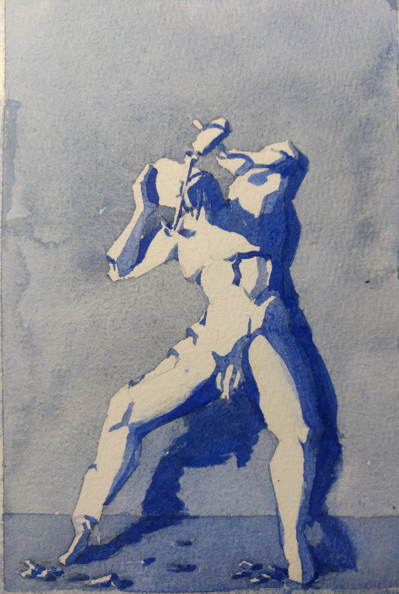
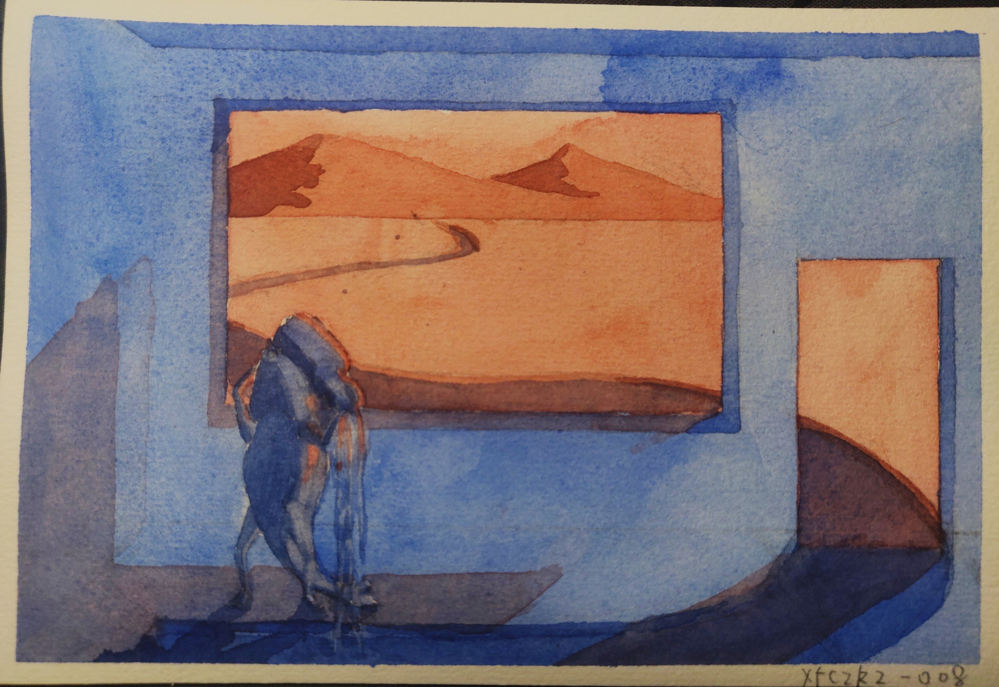
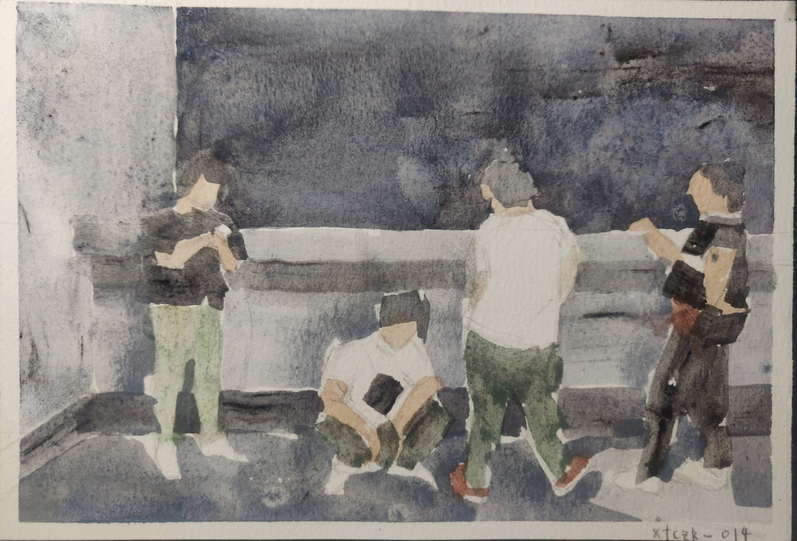
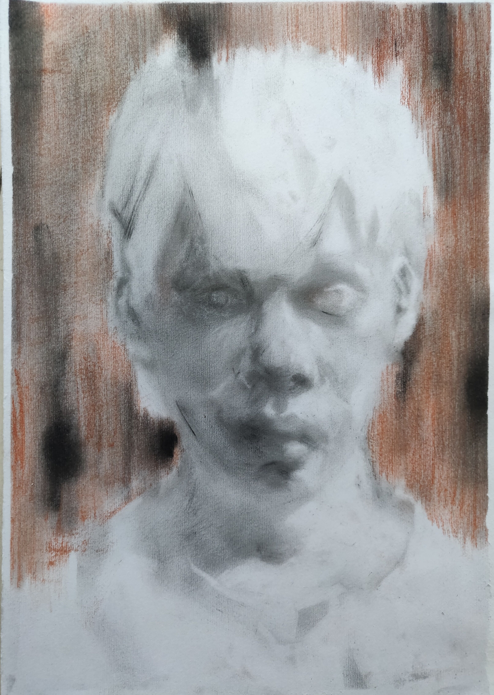
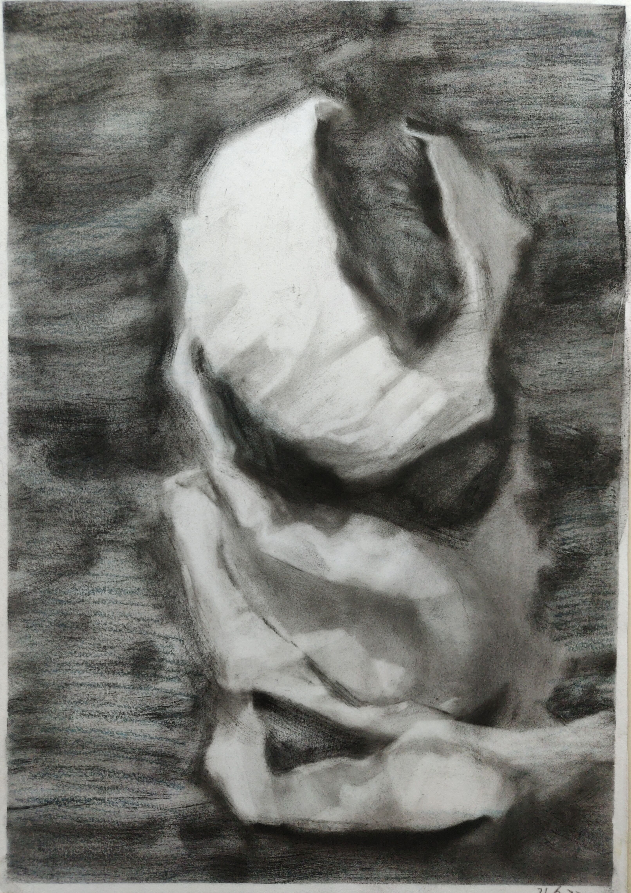
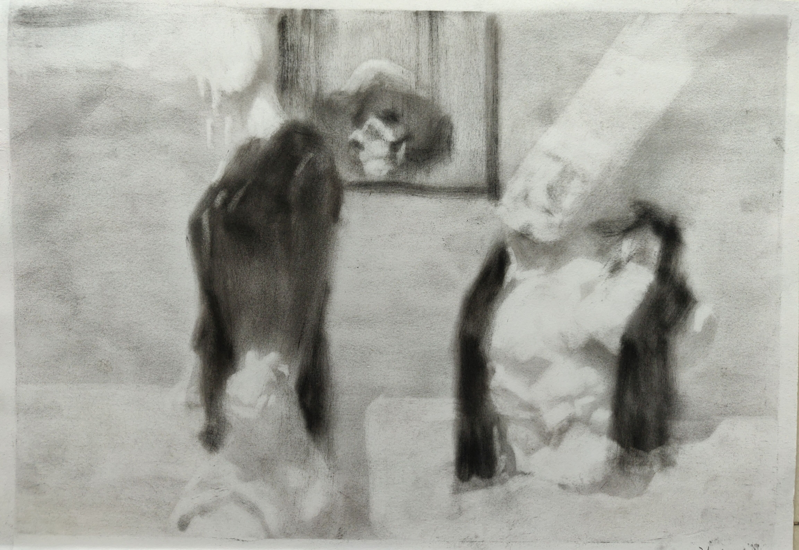
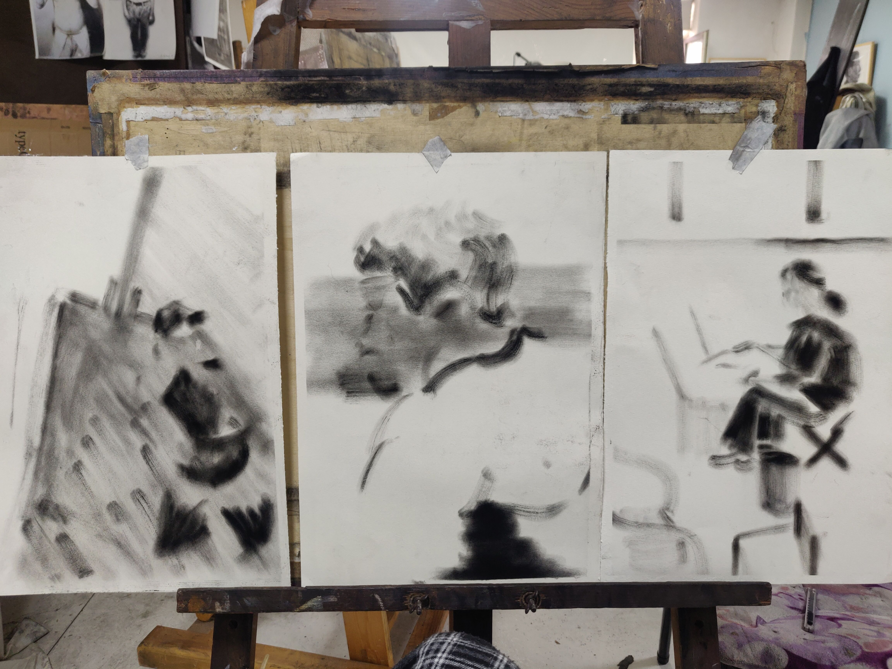

找主题¶
- startat
2021-03-19
- status
Work In Progress
课程¶
第一讲 西方传统艺术¶
主题线索
将眼见的世界描绘出来的欲望 现实主义 风景静物
将眼不可见的世界描绘出来的欲望 观念主义 故事画
时间线索
史前壁画
神话 爱琴文明 荷马史诗
现代主义 形式主义 为绘画而绘画
第二讲 中国传统艺术¶
生死观 东汉生死观 荆轲刺秦王
论道 永乐宫壁画
论佛 敦煌 哈密 喀什
维护统治 帝王画
划分阶层 风雅 文人画
传播儒学
第三讲 当代艺术主题 时间主题¶
相比传统艺术，更多元，更个人。
当代艺术的主题：
时间主题
空间场所主题
…
荐书《当代艺术的主题：1980年以后的视觉艺术》
王光乐¶
国际知名艺术家
水磨石：苦恼，困顿，消磨时间，悟道
寿漆：从容的生死观
一遍又一遍地认真覆盖：自我锤炼、真诚、时间
和解读无关 - 和艺术家的作为有关
禅宗启发的观念艺术。
谭平¶
央美设计学院院长
谭平父亲的癌细胞切片引发的思考 生死观 人的衰败过程
十分钟工作制生发的抽象画面：
真诚
不要抱怨没时间
时间的表现方式：
多幕式：戏剧帷幕 - 组画 - 用物象分割：山、墙、屏风 - 统一物象的不同状态
定格式：选取瞬间
象征法：代表时间的象征物：钟、沙漏、万字（卐）
挪用现成品
时间的特质：
情感：怀旧、流逝、腐烂、衰老、死亡
时间的具体化
不稳定材料的使用
承载时间的物品：档案、文物、收藏品、纪念物、裂痕
手段：加热 腐蚀 流动 融化
象征物：上述
马克奎恩¶
- Self
用自己冰冻的血液雕刻成头像
个体生命对外在环境的依赖性和极端脆弱性
威廉肯特里奇¶
生活在非洲的白人艺术家，主题主要来自南非种族隔离时代，以及欧洲文学
洞穴理论
参见
杜马斯
翁贝特波丘尼¶
未来主义
巴拉
贾霭力
- 张小涛 （腐败的草莓）
佛洛伊德（长久的写生）
陈友桐（霉菌艺术）
谢德庆（户外生存一年）
徐冰（蚕和桑、此处无一物，何故染尘埃）
约翰凯奇，激浪派（with 草间弥生）（4 分 33 秒）
达利
邱志杰 （一千遍兰亭序）
夏宇(?) （坦培拉，老照片）
张桓（香灰）
玛丽娜 阿布哈莫维奇（无言对视）
基弗
高速摄影
待处理
还没看
艺术家案例 - 刘小东¶
艺术家案例 - 怀斯¶
艺术家案例 - 霍伯¶
第四讲 身份主题¶
与身份关系密切的传统艺术形式：
肖像画 画面中会用各种道具暗示人物身份
特别地，自画像：自我观察 表达欲望 暴露自己
雕像
荐书《肖像的凝视》
艺术家维度¶
小技巧
伦勃朗、鲁本斯、丢勒、梵高都是艺术史上画自画像相当多的画家
👤文森特·梵高《死亡之脸》
《没胡子的自画像》
❌👤马奈《草地上的午餐》神的裸体与人的裸体：挑战了西方的文化传统
❌👤高更《我们从何处来？我们是谁？我们向何处去？》
❌👤朱迪芝加哥《晚宴》女性在历史进程中的贡献及所取得的成就
❌👤梅普勒索普《小女孩》
- 辛迪 舍曼
《无题电影剧照》系列，说谎的照片
随着自媒体时代的来临，辛迪 舍曼的手法已经成为大众消遣的手段之一了
❌👤张晓刚《大家庭》血缘牢不可破，家庭不堪一击
莫言《蛙》
被构建的身份¶
或者说「身份总是被构建的」。
种族身份 黑人 犹太人 亚洲人
性别身份 男权 女权 跨性别者 性少数者
障碍身份 残疾人 传染病患者 抑郁症患者
- 政治身份 当权者 达官
古埃及 法老雕像
中国古代 历代帝王像
中国人的身份情节¶
阶序意识
身份压力（地位和行为的匹配）
主仆情节（关于强者和弱者的态度）
人际关系中的定位（区分内外、善恶）
消解身份的政治正确¶
当身份产生时，作为消解身份的政治正确也产生了。
种族问题、女权问题、性少数问题、性别认知问题都存在不同程度的「政治正确」。
第四讲 哲学主题¶
- date
2021-05-21
认识你自己 ——苏格拉底
荐书
《西方哲学史》 詹姆斯 菲泽
《中国哲学简史》冯友兰
《苏菲的世界》
哲学如何启发艺术
柏拉图¶
理念论¶
概念本身，心灵或理智所「看」到的东西
可知世界与可感世界
- 约瑟夫 库苏斯《一把椅子和三把椅子》
观念的椅子
哲学之后的艺术——观念艺术
雷尼 玛格丽特《这不是烟斗》
洞穴理论¶
威廉 肯特里奇 南非的白人艺术家 引申政治
三段论¶
禅宗¶
禅是「洞察自己本质的艺术，它指明了从束缚到自由的道路」 ——铃木大拙
由铃木大拙传入，深刻影响美国当代艺术
为极简主义提供新的出路
- 激浪派
- 约翰凯奇《4 分 33 秒》
作曲家对自身的抽离，沉默代表着禅宗的虚无
草间弥生 小原野子
- 消除人的欲望，呈现自然的随机性
格哈德里希特
贾思伯琼斯 《美国国旗》
存在主义¶
荒谬与存在主义
加谬 《木屋与独舟》
彼得多伊格
尹朝阳《西西弗斯的神话》
总结¶
清晰的概念为思考（创作）提供牢靠的基础
每个事物都有其功能与目标
拉大尺度看问题，德行与知识等同 恶性与无知等同
艺术家案例 尹朝阳¶
待记录¶
艺术家案例分析 杜马斯¶
作业点评 牛永琦 李瑞¶
- date
2021-06-25
其实是 ./find-yourself.rst 的作业了。
牛永琦¶
数字绘画，功底扎实，画面完整。
文字非常有意思：
我身体的细胞在噼里啪啦地死去。
李瑞¶
纸本，情绪饱满，画面充分度欠。
艺术家案例分析 迪本科恩¶
👤理查德·迪本科恩 对形式语言的研究，用人体的形状来切割画面
形式语言的基本逻辑：
对抗与转化
同元素的重复
荐书
贡布里希：
《艺术与视错觉》（未找到）奥恩海姆：
《视觉思维》（未找到）《艺术与视知觉》（未找到）
艺术家案例分析 巴尔蒂斯¶
👤巴尔蒂斯 「在画面中描述一种暧昧的状态」。
非科班，却深受古典主义影响。
浮世絵
主题选择的策略。
风格：浮雕化，硬边。
和 ❌👤尼德兰画派 对比。
参见
❌👤李桂君
作业¶
以 xfczk2 为 ID。
- 要求：
以 找自己 中的小创作提炼出来的关键词为参考，选定一个作为主题 进行创作
至少五十张小画，尺幅 3、40 公分以内
以筹备个虚拟的
《个人展览》（未找到）为目标，每一张画完张贴起来，整体呈现依然不评判好坏
- 主题：
内窥
我在之前的画里常常描述对自己的审视，从一个（往往是负面的）想法出发， 探寻藏在皮肤里面的自己，在这个系列里我要专注于此。
我一定不是自己看到的那样，这个世界不存在能看到整个我的眼睛。
伪善与善¶
待处理
图片未上传
- 相麻
假設在某個地方，有神明存在。 神明做了一個實驗。那個實驗的目的，是想讓人變成善人。然後祂挑了一位青年， 作為實驗的樣本。
- 惠
然後呢？
- 相麻
在實驗一開始，神明創造一個那位青年的冒牌貨。 冒牌貨本身並不具備意誌，只會做出和真正的青年相同的行動。 神明認為隻要有另一個自己，或許就能透過客觀檢視自己的行為，讓人變成善人。
- 惠
如果是神明，那應該不用做實驗也能知道結果吧。
- 相麻
那位神明雖然幾近全能，卻非常無知。
- 惠
喔，為什麼？既然是全能，那應該也能讓自己變全知才對啊。
- 相麻
雖然曾經獲得足以被稱為全知的知識，不過祂馬上就舍棄那些知識。 所以祂變成一個幾近全能，卻也極度接近無知的神明。神明也是有很多苦衷的。
- 惠
好吧。總之神明做了一個創造善人的實驗，並做出某位青年的冒牌貨。
- 相麻
沒錯。可是青年的行動並沒有改變。雖然他絕對不算壞人，卻也沒到被稱為善人的地步。 冒牌貨也和他一樣，過著不算好也不算壞的生活。
- 惠
那神明滿意了嗎？
- 相麻
不，所以祂進行第二個實驗，神明對青年下了某種詛咒， 只要一看見悲傷的人，全身就會疼痛不已的詛咒。
- 惠
喔，那還真是不得了。
- 相麻
所以青年變得無法對悲傷的人置之不理。為了消除自己的疼痛 他對所有悲傷的人伸出援手。
- 惠
原來如此。然後呢？
- 相麻
青年的冒牌貨，也做了相同的行動。雖然不會全身疼痛不已 不過他被設計成會做出和青年一樣的舉動。所以青年和冒牌貨，都度過善人的一生 故事到這裏就結束了。
- 惠
神看見這個結果後，有怎麼樣嗎？
- 相麻
祂替青年和冒牌貨各自取了名字。
- 惠
什麼名字？
- 相麻
一個叫做善，另一個叫偽善。
- 惠
話說回來，相麻。這故事到底有什麼意義？
- 相麻
只是個比喻而已。為了讓你明白，自己是個一絲不苟的善人。
- 惠
到底要怎麼想，事情才會變成那樣？
- 相麻
惠。你覺得哪一邊是善，哪一邊是偽善？
- 惠
真正的青年是偽善，冒牌貨是善。
- 相麻
為什麼你會這麼認為？
- 惠
真正的青年是為了自己才幫助別人，冒牌貨則是在毫無任何打算的情況下助人。 不用想也知道，哪一邊是純粹的善。
- 相麻
不過真正的青年是按照自己的意思在行動，冒牌貨只是遵從本人而已喔？
- 惠
這並不構成問題。為了自己所做的行為，根本就稱不上是純粹的善。
… 3
这里我复述了上面的 矛盾 ，并附上自己的意见。
试解电车难题¶
待处理
图片未上传
这里我描述一种 荒诞 ，我解不开题，只能装傻了。
HOW I LIVE¶
待处理
图片未上传
我不善于休息，一直在不同的，互相重叠的上下文之间切换。
overhaed 非常大，有时会变得不是我自己。
疹子¶
待处理
图片未上传
我觉得浑身不舒服，什么都不想画，草草应付了事。
冰川领航员¶
待处理
图片未上传
名字来自 📖水星领航员 ，但没什么关系。
我小心翼翼地驾驶着自己，光看水面上的部分没有用，它们一定关联着更潜意识的， 更不愿意被看到的某些东西。
内窥¶
待处理
图片未上传
把视线插入自己身体里，我能窥见自己吗？
在一边忙着 领航 的情况下。
求雨¶
待处理
图片未上传
没画好，所以什么都没有表达出来。
剥离¶
{kind=link}
我把我不喜欢的东西慢慢地从身上敲下来。
变成更完美的我。
出行准备¶
{kind=link}
我不能游在干涸的河床上。
参见
鱼鱼的姿势参考了 ❌👤安格尔 的《泉》，
构图上想有 👤爱德华·霍伯 那样的感觉，但最后啥也没有。
意识流分析¶
待处理
图片未上传
我意识到自己非物质的部分是由意识构筑的，意识又分为可控的小部分和不可控的大部分。小部分是普通意义上的「我」，大部分是湍急暗涌的潜意识。
西西弗斯的一天¶
待处理
图片未上传
西西弗斯每天：
西西弗斯每天：
必须推开被子才能起床，每次巨石滚回山下又要盖上被子睡觉 ——
👤SilverRainZ
Antihug¶
待处理
图片未上传
我不会拒绝任何人的拥抱，没有人的拥抱是特别的，都同样地能抚慰我。可道德上不能这样，于是我伸出手抱住了自己。
我¶
待处理
图片未上传
认识你自己¶
待处理
图片未上传
2018 年的雷池项目组在 2021 年的投射¶
{kind=link}
忆江南小区的保安岗¶
待处理
图片未上传
我不是老好人，我只是太过孤寂怕无法自己燃过这个夜晚，所以才帮你的忙。
意识的纠集¶
待处理
图片未上传
它们纠集起来会成为什么，会是我的敌人吗？
参见
漫长的剥离¶
待处理
图片未上传
在我以为我在重建这段感情的时候，它其实还在剥离，一刻也没有停止过。所谓「改变」带来的痛感其实和之前的不适并没有分别。
等到了意识到的时候，痛感变成愤懑和孤独，我用睡眠和自慰冲刷它们，从马桶里冲走，它们不必带到以后的生活里。
参见
自画像¶
{kind=link}
黄剑说像 ❌👤毛焰 ，我觉得像谁不重要。
这是我自己，是我的媒介和步骤综合呈现出来的画面。
无题¶
{kind=link}
自觉并不好，但晓飞老师觉得好，那就放进来吧。
各向异性的无聊¶
{kind=link}
我不甘于无聊的画面，又陷在过渡的时间里动弹不得。 那就破坏吧，破碎比平庸有趣一点。
逃离前夜¶
{kind=link}
离开画室的倒数第二天，从右到左，依次是若涵、黄剑和小龙。
吃了劳拉西泮后的自画像¶
待处理
图片未上传
回到广东的第五天，三十多度的高温让人不舒服，虽然此刻我把空调打开了。
情绪因为和 jiang 纠缠不清，所以又挨了重重一下。一宿没睡，胸口沉重得像铁块。我意识到自己陷入难以自拔的焦虑状态了。我想办法让自己动起来，整理绘画笔记，看 《我们内心的冲突》 。到了晚上的时候决定再吃几天劳拉西泮：我不知道见效有多快，相信会有用的。
为往圣开绝路¶
待处理
图片未上传
我不需要圣人，让他们都去死吧。